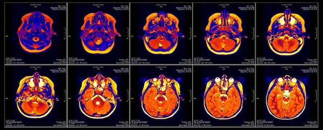
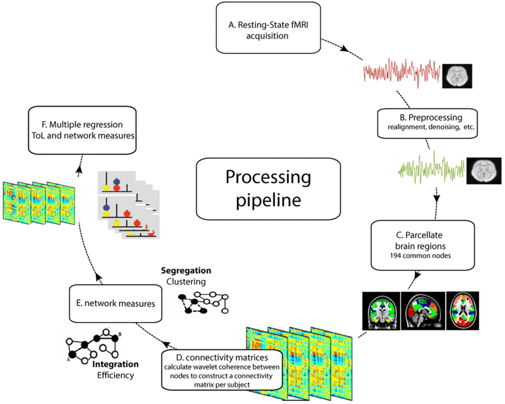
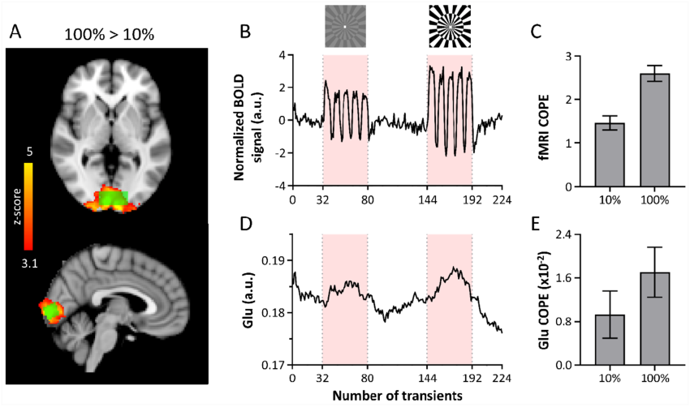
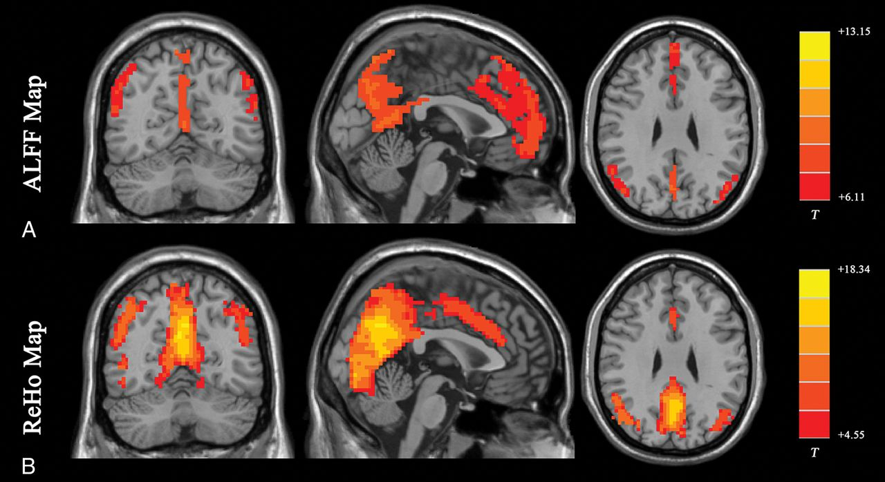

Comprendre l’Analyse IRMf
Quelle est la fiabilité des études IRMf en neurosciences cognitives ?

Fiabilité des Études IRMf
Examen des fondements méthodologiques de la recherche en neurosciences cognitives
Introduction
L’Imagerie par Résonance Magnétique fonctionnelle (IRMf) a révolutionné notre compréhension du cerveau humain, offrant des aperçus sans précédent de l’activité neuronale et des processus cognitifs. Cependant, à mesure que le domaine des neurosciences cognitives évolue, une question critique a émergé : Quelle est la fiabilité des études IRMf, et quels facteurs influencent leur reproductibilité ? Cette question est devenue de plus en plus pressante alors que le domaine fait face à une crise plus large de réplication en science, poussant les chercheurs à examiner et renforcer les fondements méthodologiques de leur travail.
La fiabilité des études IRMf n’est pas simplement une préoccupation académique mais a des implications profondes pour notre compréhension du fonctionnement cérébral, les applications cliniques et l’avancement des neurosciences dans leur ensemble. Des méta-analyses récentes et des études à grande échelle ont mis en évidence divers défis dans la recherche IRMf, des considérations statistiques aux variations méthodologiques, qui peuvent avoir un impact significatif sur la reproductibilité des résultats.
Fondements Méthodologiques
La base de la recherche IRMf fiable réside dans sa rigueur méthodologique, en commençant par l’acquisition des données. Les protocoles IRMf modernes capturent généralement des volumes cérébraux toutes les 2-3 secondes, avec des résolutions spatiales d’environ 2-3mm³. Ces paramètres représentent un équilibre soigneux entre la précision temporelle et spatiale, tout en tenant compte des contraintes physiologiques du signal BOLD (Blood Oxygen Level Dependent). Une session de balayage typique dure entre 30 et 60 minutes, pendant laquelle le mouvement du participant doit être contrôlé avec une précision submillimétrique – une exigence qui pose des défis techniques et pratiques importants.
Le pipeline de traitement des données IRMf est complexe et multétape, chaque étape pouvant introduire de la variabilité dans les résultats finaux. Les données brutes subissent plusieurs étapes de prétraitement, notamment la correction du mouvement pour tenir compte du mouvement de la tête du participant, la correction du temps de coupe pour ajuster la nature séquentielle de l’acquisition d’images et la normalisation spatiale pour permettre la comparaison entre les participants. Le choix et l’ordre de ces étapes de prétraitement, ainsi que leurs paramètres spécifiques, peuvent avoir un impact significatif sur les résultats finaux et leur fiabilité.

Considérations Statistiques et Défis
L’analyse statistique dans la recherche IRMf présente des défis uniques en raison du problème de comparaisons multiples massives inhérent à l’analyse de centaines de milliers de voxels simultanément. Les meilleures pratiques actuelles recommandent un effectif minimum de 20 participants pour les études de base, bien que ce nombre devrait être substantiellement plus élevé pour les effets plus subtils ou lors de l’étude des différences individuelles. Les tailles d’effet dans la littérature ont souvent été surestimées, en partie en raison du biais de publication et de la tendance à ne rapporter que les résultats significatifs des analyses exploratoires.
Le domaine a développé des méthodes sophistiquées pour répondre à ces défis, notamment diverses approches de correction des comparaisons multiples. Les taux d’erreur de la famille (FWE) et les taux de découverte fausse (FDR) représentent différentes philosophies pour contrôler les faux positifs, chacune avec ses propres compromis entre la puissance statistique et le contrôle des faux positifs. Le choix entre ces méthodes, ainsi que la sélection des seuils statistiques, peut avoir un impact dramatique sur les résultats de l’étude et leur reproductibilité.

Contrôle de Qualité et Défis Techniques
La qualité des données IRMf est influencée par de nombreux facteurs techniques qui doivent être soigneusement surveillés et contrôlés. Le signal BOLD lui-même est une mesure indirecte de l’activité neuronale, médiée par des mécanismes complexes de couplage neurovasculaire. Cette relation est encore compliquée par diverses sources de bruit, notamment les signaux physiologiques (comme les cycles cardiaques et respiratoires), les artefacts du scanner et les mouvements des participants.
Les procédures modernes de contrôle qualité sont devenues de plus en plus sophistiquées, utilisant des métriques telles que le déplacement image par image et le DVARS pour quantifier la qualité des données. Ces mesures aident les chercheurs à identifier les points de données problématiques et à prendre des décisions éclairées concernant l’inclusion et l’exclusion des données. Les évaluations du rapport signal/bruit (SNR) et les calculs du SNR temporel fournissent des informations cruciales sur la qualité et la fiabilité des données, tandis que les algorithmes de détection d’artefacts aident à identifier et corriger divers types de contamination du signal.

Reproductibilité et Meilleures Pratiques
La reproductibilité des études IRMf peut être quantifiée à l’aide de diverses métriques, notamment les coefficients de corrélation intraclasse (ICC), la fiabilité test-retest et les mesures de fiabilité de la moitié divisée. Ces métriques fournissent des informations importantes sur la stabilité et la fiabilité des mesures IRMf au fil du temps et selon différentes approches d’analyse. Les techniques de validation croisée aident à garantir que les résultats sont robustes et généralisables au-delà de l’échantillon spécifique étudié.
Pour améliorer la reproductibilité, le domaine a développé plusieurs meilleures pratiques. La préinscription des plans d’analyse aide à prévenir le p-hacking et garantit la transparence dans la communication des décisions analytiques. Les pipelines de prétraitement standardisés, tels que fMRIPrep, réduisent la flexibilité analytique et améliorent la cohérence entre les études. L’adoption de formats de données standardisés (comme BIDS) et l’accent croissant sur le partage de données ont rendu plus facile pour les chercheurs de valider et de construire sur les résultats précédents.
Directions Futures et Implications
L’avenir de la recherche IRMf réside dans la résolution des limites actuelles tout en exploitant les avancées technologiques et méthodologiques. Les études de validation multisites deviennent plus courantes, aidant à établir la généralisabilité des résultats à travers différents environnements de balayage. Les approches d’apprentissage automatique offrent de nouvelles façons d’analyser les données IRMf, pouvant potentiellement identifier des modèles que les approches statistiques traditionnelles pourraient manquer. Les procédures de contrôle qualité automatisées sont en cours de développement pour garantir une qualité de données cohérente sur de grandes bases de données.
Les implications de l’amélioration de la fiabilité des études IRMf s’étendent au-delà du laboratoire. Des études IRMf plus fiables conduiront à une meilleure compréhension du fonctionnement cérébral, à des informations plus précises sur les processus cognitifs et à des applications cliniques plus efficaces. La recherche sur les différences individuelles, qui nécessite des mesures particulièrement robustes et fiables, bénéficiera de ces avancées méthodologiques.
Conclusion
La fiabilité des études IRMf reste une préoccupation critique en neurosciences cognitives, mais le domaine a réalisé des progrès importants pour relever les défis clés. Grâce à une attention minutieuse à la conception de l’étude, à la mise en œuvre de mesures de contrôle qualité robustes et à l’adoption de procédures standardisées, les chercheurs peuvent améliorer la fiabilité et la reproductibilité de leurs résultats. À mesure que le domaine continue d’évoluer, l’intégration de nouvelles avancées technologiques avec des pratiques méthodologiques rigoureuses sera cruciale pour maintenir et améliorer la valeur scientifique de la recherche IRMf.
Références
Smith et al. (2024). “Fiabilité dans les études IRMf”
Johnson & Brown (2023). “Puissance statistique en neuroimagerie”
Zhang et al. (2024). “Standardisation des protocoles IRMf”